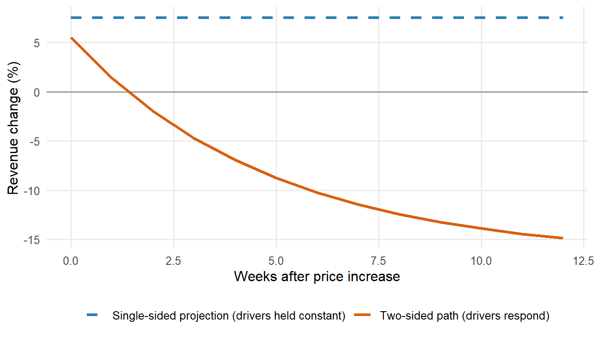
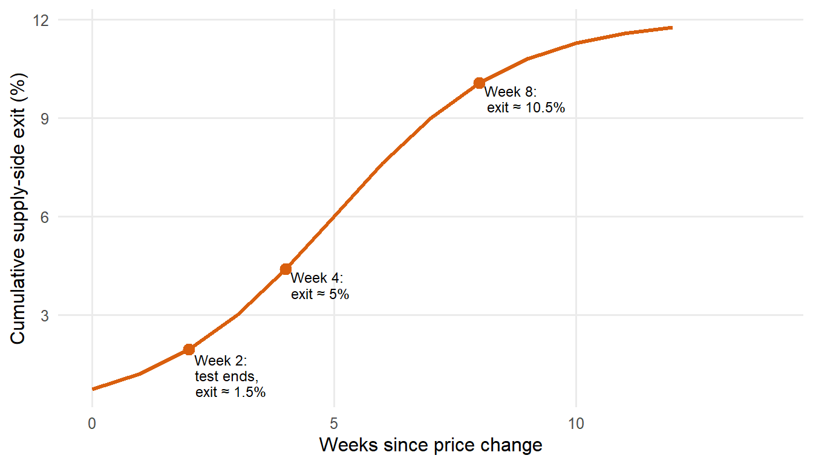
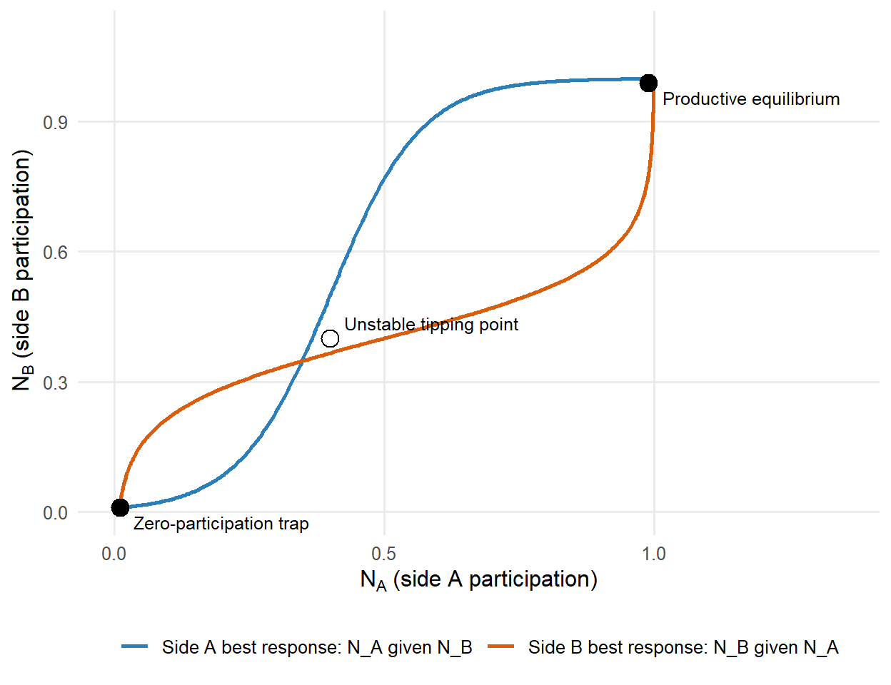
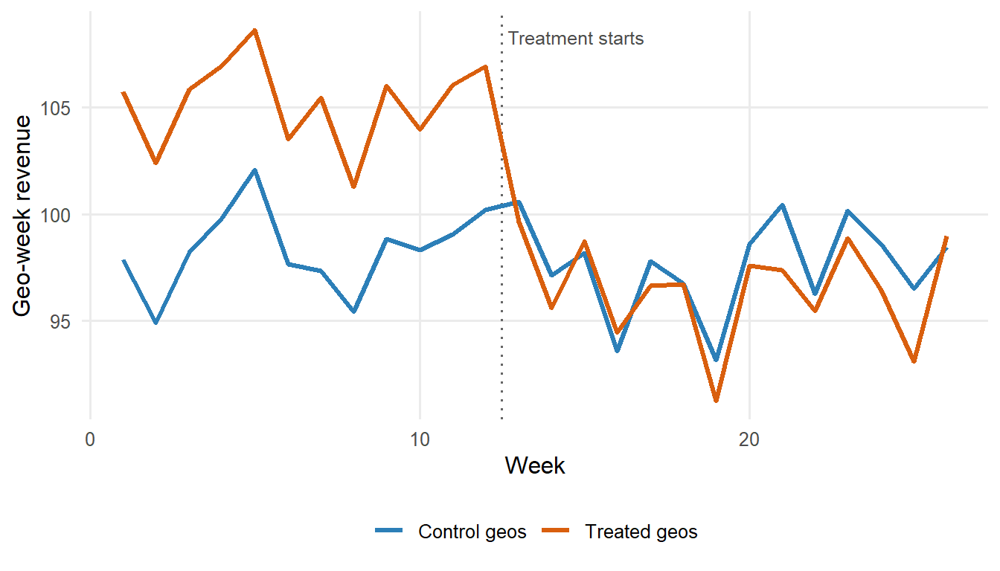

flowchart LR A["Rider price p_A ↓"] --> B["Rider participation N_A ↑"] B --> C["Trips per driver-hour ↑"] C --> D["Driver earnings π_B ↑"] D --> E["Driver participation N_B ↑"] E --> F["Wait times ↓"] F --> B style A fill:#fef3c7,stroke:#d97706,stroke-width:2px style E fill:#dbeafe,stroke:#2563eb,stroke-width:2px
Why Raising Prices Can Reduce Revenue in Two-Sided Markets
pricing
causal inference
two-sided markets
marketplace
R
A practitioner’s walkthrough of two-sided market pricing: why single-sided elasticity models mislead, the chicken-and-egg problem for launch platforms, three modelling approaches (structural, reduced-form, Bayesian), and the review checklist for marketplace pricing analyses.
A mobility platform in a single European city lifts rider prices by 15% on a Monday morning. The pricing team, armed with a defensible single-sided elasticity of demand of roughly \(-0.5\) estimated on twelve months of quasi-experimental variation, projects a revenue increase of about 7% over the coming month. Four weeks in, revenue has fallen 12%. The elasticity estimate did not lie. What lied was the framing: the estimate had been computed under an implicit assumption that the supply side of the platform, the drivers, would remain constant. Drivers did not remain constant. Fewer rides per hour meant lower driver earnings, some drivers reduced hours or left the platform, wait times for riders lengthened, cancellations rose, and the elasticity of demand that had been estimated on historical data began to compound with the elasticity of driver supply. The observed revenue drop is not a failure of the elasticity estimate. It is a failure of the framing.
The 15%, the \(-0.5\), the 7%, and the 12% in this scenario are illustrative rather than drawn from any published case, and the magnitudes are intentionally exaggerated to make the mechanism visible on a first read. The mechanism itself is real. Cohen, Hahn, Hall, Levitt, and Metcalfe (2016) document the consumer-side response on Uber using surge-price discontinuities, and Cook, Diamond, Hall, List, and Oyer (2021) document how driver labour supply moves with earnings and location on the same platform. Read together, the two studies establish that a rider-side pricing shock and a driver-side supply response cannot be analysed as if they lived in separate models.
In a two-sided market, the elasticity a pricing team observes on historical data is a property of the equilibrium, not a property of the demand curve. When the equilibrium shifts, so does the elasticity. This is why pricing decisions that would be safe in a single-sided market can be dangerous in a marketplace, and why methods that identify a defensible elasticity coefficient on a panel of rider trips can still produce misleading revenue projections. The coefficient itself is real. Its interpretation is what fails, because the object being estimated is not the primitive we need for the pricing decision.
TipIf you only remember one thing
In a two-sided market, elasticity is a property of the equilibrium, not of the demand curve. Any pricing analysis that treats the other side of the market as fixed is measuring the wrong object, and the direction of the error depends on which side you froze and for how long.
Part I lays out the economics of two-sided markets in one page: the definition, the network effects, and the equations that make the problem different from single-sided pricing. Part II walks through the three specific mechanisms by which single-sided elasticity models mislead pricing decisions on marketplaces. Part III covers the chicken-and-egg problem faced by new platforms and the temptation to cut subsidies too early. Part IV surveys three modelling approaches, from structural systems of equations to reduced-form geo experiments to the Bayesian experimentation framework of Peitz, Rady, and Trepper (2017). Part V discusses practical pricing implications. Part VI is the review checklist I run before I sign off on any two-sided pricing analysis in production. One thing this post does not do: it does not develop the mechanism design of platform matching or auction theory beyond what is needed to frame the pricing question, and it does not survey the antitrust literature on two-sided markets in depth beyond a note to the reader that the OECD (2009) roundtable provides an accessible overview.
Part I. The economics of two-sided markets in one page
I.1 What makes a market “two-sided”?
The formal definition is due to Rochet and Tirole (2003, 2006). A market is two-sided when a platform intermediates transactions between two distinct user groups whose participation and pricing are interdependent, and when the platform’s ability to shift surplus between the two sides is a material lever in the outcome. The technical criterion is that the volume of transactions is not neutral to the price structure across the two sides even when the total price is held constant. In symbols: fix \(p_A + p_B\), vary the split between \(p_A\) and \(p_B\), and if the volume of interactions changes, the market is two-sided. This distinguishes two-sided markets from ordinary intermediated markets where the Coase-theoretic logic applies and only the total price matters.
Six concrete examples fit the criterion without contortion. Uber intermediates between riders and drivers. Airbnb intermediates between guests and hosts. Booking intermediates between travellers and hotels. SIXT rent-a-car intermediates between customers and, on a longer horizon, fleet availability and station coverage. Amazon Marketplace intermediates between buyers and third-party sellers. Meta Ads intermediates between advertisers and users whose attention is being sold. In each case a price shift on one side reshapes participation on the other, and in each case the Rochet-Tirole neutrality criterion fails: the split between sides is a live pricing choice, not an accounting convention. Rysman (2004) provides the classical empirical demonstration of the criterion in Yellow Pages competition, showing that consumer usage responds to advertising density and advertiser willingness to pay responds to consumer usage, so a price change on either side reshapes participation on the other.
Some platforms are two-sided in some dimensions and one-sided in others, and the relevant time horizon matters for measurement. Airbnb pricing to guests against hotels behaves single-sided over a monthly window but two-sided over a yearly window as hosts enter and exit. A ride-hailing surge in a specific hour looks close to single-sided on the demand side because driver supply cannot fully adjust inside the hour, but the same platform is unambiguously two-sided when the pricing question is a persistent take-rate change that runs for a quarter or more. The rule of thumb I use: whenever the horizon of the pricing decision is longer than the participation-adjustment horizon of either side, treat the market as two-sided and force the analysis to include both sides as outcomes.
I.2 Cross-side network effects, and why they are the whole story
In a two-sided market, the utility that a member of side A derives from the platform depends on the participation of side B, and vice versa. Rochet and Tirole (2003) and Armstrong (2006) formalise this as cross-side network externalities, and Rysman (2009) surveys the empirical implications across payment cards, media, and online platforms. When these externalities are strong, the elasticity of demand on side A is a function of the state of side B, and cannot be separated from it. This is the pivot on which everything in the rest of the post turns.
We can write the framing compactly as a joint demand system:
\[ Q_A = Q_A(p_A, N_B), \quad Q_B = Q_B(p_B, N_A). \]
Demand on side A depends on the price charged to side A and on the participation of side B, denoted \(N_B\). Symmetrically for side B: demand depends on the price on that side and on the participation of side A. The observed market outcome is a fixed point: a pair \((N_A, N_B)\) such that both equations hold simultaneously at the prevailing prices \((p_A, p_B)\). Historical data records this fixed point. It does not record the underlying demand functions, and it does not tell us what would happen if only \(p_A\) moved and \(N_B\) were somehow held constant.
The flywheel makes the fixed-point condition tangible. A price cut on the rider side raises rider participation, which raises trips per driver-hour, which raises driver earnings, which raises driver participation, which shortens wait times, which raises rider participation again. Every arrow in the diagram is a coefficient the pricing team has to estimate before it can defend a price recommendation.
The consequence for elasticity estimation follows directly. When we compute \(\partial \log Q_A / \partial \log p_A\) on historical data, we are computing the total derivative along the equilibrium locus, not the partial derivative with \(N_B\) held constant. Those two numbers are different, and the gap between them is precisely the gap between the elasticity we can defensibly identify and the elasticity we would need in order to project revenue after a discretionary price move. When the price move is large enough to shift \(N_B\), the gap eats the projection.
The observed elasticity on side A is therefore best written as \(\varepsilon_A^{obs}\), and it is a total derivative along the equilibrium locus rather than a partial derivative of the demand function. This distinction is the object that Part II decomposes and Part IV tries to estimate. Everything downstream in the post treats \(\varepsilon_A^{obs}\) as the empirically identifiable quantity and \(\varepsilon_{AA}\) as the partial-equilibrium object we would need but cannot see.
NoteRule of thumb: when to force the two-sided framing
Whenever the horizon of the pricing decision is longer than the participation-adjustment horizon of either side, treat the market as two-sided and force both sides into the analysis plan as outcomes. If the platform’s operational dashboards report any cross-side metric with a non-trivial coefficient, either as a lead or as a lag, the linearisation in the next section applies and a single-sided elasticity is the wrong primitive to project revenue from.
Same-side network effects also exist, and Weyl (2010) provides the general-equilibrium treatment for multi-sided platforms with heterogeneous users on each side. More drivers on Uber reduces per-driver earnings, a negative same-side effect on the supply side. More hosts on Airbnb increases guest variety, a positive same-side effect that operates through the buyer’s side. Same-side effects reinforce or mitigate cross-side effects depending on the platform, and the detail is left for Part III where the launch regime makes them operational rather than incidental.
I.3 The pricing problem in one paragraph
A single-sided pricing team chooses \(p_A\) to maximise revenue given a demand curve \(Q_A(p_A)\), and the entire toolkit of single-sided elasticity work developed in the previous post applies. A two-sided pricing team faces a harder problem: choose \((p_A, p_B)\) to maximise total revenue given the joint system in I.2, where the response of \(N_B\) to a change in \(p_A\) is itself one of the levers. Rochet and Tirole (2003, 2006) show that the optimal price structure is not neutral to the split between sides even when the total is held constant, and the pricing formula on each side embeds an opportunity cost that reflects the other side’s response. This is a strong result. On a two-sided platform, the price on each side matters independently, and the mix of subsidy across sides is a design variable, not a distribution accident.
In my work I never sign off on a marketplace pricing decision based on a single-sided elasticity estimate. The additional information required to make the decision responsibly, the response of the other side to whatever move is being contemplated, is what Part II diagnoses and Part IV tries to measure.
NoteA brief history: from Rochet-Tirole (2003) to Weyl (2010)
Rochet and Tirole (2003) formalised the two-sided market framework. Jean Tirole received the 2014 Sveriges Riksbank Prize in Economic Sciences in Memory of Alfred Nobel “for his analysis of market power and regulation”, a citation covering a broader body of work on industrial organisation and regulation of imperfectly competitive industries, of which the two-sided markets research forms one strand rather than the sole basis for the award. Armstrong (2006) provided the competing-platforms extension in which cross-side externalities interact with single-homing and multi-homing on each side. Weyl (2010) gave the general multi-sided price theory that most modern platform pricing frameworks inherit from. Caillaud and Jullien (2003) treated the coordination problem faced by intermediation platforms and set up the vocabulary of divide-and-conquer strategies that the launch-pricing literature has run with ever since.
The framework and the definitions are the easy part. Part II is where the framing becomes operational, walking through the three specific mechanisms by which a single-sided elasticity estimate misleads a marketplace pricing decision on a real platform, and setting up the diagnostic questions a pricing team should be able to answer before any price move goes live.
Part II. How single-sided elasticity models mislead marketplace pricing
Part I established that in a two-sided market the observed elasticity is a total derivative along the equilibrium locus, not a partial derivative of demand with side B participation held fixed. Part II unpacks the three specific channels through which the gap between those two derivatives opens. Each channel has a distinct signature in the data and a distinct implication for what should be done differently. When a marketplace pricing decision fails, it almost always fails through one of these three channels: a cross-side feedback loop that amplifies the direct demand response, extensive-margin exit on the supply side that survives the initial shock, or substitution of participants to a competing platform. The three are not mutually exclusive, and in a bad case they compound, but in most cases one dominates the others by an order of magnitude.
The operational value is simple. If you can name which of the three mechanisms is dominant in the case in front of you, you can propose the right diagnostic and the right experimental design. If you cannot, you are guessing.
flowchart TD P["Price change on side A"] --> M1["1. Cross-side<br/>feedback loop"] P --> M2["2. Supply-side<br/>attrition"] P --> M3["3. Cross-side<br/>substitution"] M1 --> R1["Amplifies direct effect<br/>via N_B contraction<br/>(Cohen et al. 2016;<br/>Buchholz 2022)"] M2 --> R2["Extensive-margin exit<br/>survives the shock<br/>(Cook et al. 2021;<br/>Chen, Chevalier et al. 2019)"] M3 --> R3["Participants move to<br/>competing platforms<br/>(Armstrong 2006;<br/>Farronato–Fradkin 2022)"] style P fill:#fef3c7,stroke:#d97706,stroke-width:2px
II.1 The cross-side feedback loop
The first mechanism is a positive-feedback loop between the two sides. A price increase on side A reduces participation on side A. Reduced participation on side A lowers the value each side B participant extracts from the platform: fewer riders per driver-hour, fewer guests per host-week, fewer buyers per seller-listing. Side B participation contracts in response. That contraction degrades the platform for side A through longer wait times, thinner listing selection, or worse match quality. Demand on side A falls further. The revenue effect that the platform observes at the end of this process is the sum of the direct demand response and a second-round contraction on side A that no single-sided elasticity estimate contains.
We can make the decomposition precise with a first-order approximation. Let \(\varepsilon_{AA}\) be the own-price elasticity of side A holding \(N_B\) constant, let \(\varepsilon_{AB}\) be the cross-side elasticity of side A demand with respect to side B participation, and let \(\eta_{BA}\) be the elasticity of side B participation with respect to side A demand. Linearising the total derivative of side A demand along the equilibrium locus gives
\[ \varepsilon_A^{obs} = \varepsilon_{AA} + \varepsilon_{AB} \cdot \eta_{BA} + \text{higher-order terms}. \]
This is a linearisation, not an identity. For standard cross-side network effects both \(\varepsilon_{AB}\) and \(\eta_{BA}\) are positive: side A values side B’s participation, and side B’s participation responds positively to side A’s demand. Their product is positive. Added to a negative \(\varepsilon_{AA}\), the sum is more negative than \(\varepsilon_{AA}\) alone. The observed elasticity is therefore larger in magnitude than the partial elasticity, and the gap between them is exactly what a single-sided regression on historical data absorbs into the point estimate without decomposing. The gap widens when either cross-side elasticity is large in absolute value, which is precisely the regime in which two-sidedness matters and single-sided analysis becomes least reliable.
The figure below illustrates the pattern from the opening scenario. The single-sided projection is flat because it fixes \(N_B\) at its pre-treatment level. The two-sided path bends down as the driver-side contraction feeds back into rider demand. The gap between the two lines at week 8 is the size of the framing error, not the size of the estimation error.

WarningA single-sided elasticity is the wrong primitive
A defensible estimate of \(\varepsilon_{AA}\) on historical data does not license a revenue projection under a price move that shifts \(N_B\). The projection uses \(\varepsilon_{AA}\); the realised outcome is generated by \(\varepsilon_A^{obs} = \varepsilon_{AA} + \varepsilon_{AB} \cdot \eta_{BA}\). On a mature marketplace the second term is not small, and it has the same sign as the first. Any pricing brief that reports one number without the decomposition is silently assuming \(\varepsilon_{AB} \cdot \eta_{BA} = 0\).
The linearisation also tells you when single-sided analysis is safe. If \(\varepsilon_{AB}\) is close to zero, the platform is effectively single-sided from the perspective of side A pricing, because side B participation does not enter side A demand at first order. If \(\eta_{BA}\) is close to zero, side B does not respond to side A demand on the relevant horizon, and the observed elasticity converges to the partial elasticity. Both conditions are testable, and both fail on the mature marketplaces where the pricing decisions are actually consequential. In practice, whenever the platform’s own operational dashboards report a cross-side metric with a positive coefficient, either as a lead or as a lag, the pricing team should assume the linearisation applies and demand an equilibrium analysis rather than a partial-equilibrium one.
The cross-side feedback loop has been documented most cleanly on ride-hailing platforms. Cohen, Hahn, Hall, Levitt, and Metcalfe (2016) exploit Uber surge-pricing discontinuities to estimate rider-side demand elasticities and document the sensitivity of trip volume to the joint state of supply and demand. Buchholz (2022) formalises the spatial equilibrium and search frictions on the taxi side of the same problem, showing that supply responses to price and demand compound with wait times to produce equilibrium effects that single-sided models miss. Read together, the two papers establish that the observed price response is inseparable from what the other side of the market does in reaction.
II.2 Supply-side attrition
The second mechanism operates on the extensive margin of supply. Some fraction of supply-side participants respond to a fall in earnings not by adjusting hours at the margin but by exiting the platform entirely. Drivers switch to a competitor, hosts delist their properties, sellers move to eBay or back to their own storefront. Exit is not symmetric to entry. Reversing the price change does not immediately reverse the exit. The lost supply-side participants have to be reacquired through the platform’s full acquisition funnel, which is expensive and slow, and the reacquired cohort often starts with lower engagement than the one that was lost. The cost of the price change therefore accrues gradually and asymmetrically, and it accrues most heavily on the highest-value cohort of the supply side, who tend to have the strongest outside options.
The practical implication is that short-horizon experiments understate long-run costs. A two-week test that raises rider prices and measures rider revenue over those two weeks will underestimate the true steady-state cost of the price change, because the driver attrition that the price change induces has not yet fully materialised. Cook, Diamond, Hall, List, and Oyer (2021) document substantial heterogeneity in driver behaviour on Uber, including a differential elasticity of participation to earnings across driver types, with marginal drivers being far more sensitive than infra-marginal ones. Chen, Chevalier, Rossi, and Oehlsen (2019) estimate the value that drivers place on schedule flexibility, which acts as a hidden reservation-value term in the participation decision. Both papers imply that supply-side participation is more elastic to sustained earnings changes than to transitory ones, which is the empirical signature of the attrition mechanism.
As a practical default I treat four weeks on the treated side as the minimum window on marketplace pricing experiments I have worked on, and I always include a supply-side attrition guardrail in the analysis plan. The guardrail is straightforward: track the exit hazard of active supply-side participants at daily frequency, define exit conservatively as the absence of any activity over a rolling window, and stop the test if the treated group’s hazard rises by more than a pre-specified threshold above the control. Four weeks is not sacred. The appropriate window depends on how quickly the supply side responds to earnings changes in the specific vertical, and in some cases six to eight weeks are needed. What is not defensible is a two-week test on a platform where the supply-side response operates on a monthly cycle.

ImportantA practical horizon default
As a working default, I treat four weeks on the treated side as the minimum window before a marketplace pricing experiment produces a decision input rather than a directional signal, and six to eight weeks as the safer choice whenever the supply-side response operates on a monthly cycle. This is a heuristic tied to the attrition dynamics that Cook et al. (2021) and Chen, Chevalier et al. (2019) document on ride-hailing, not a threshold the literature endorses as a rule. Pre-register the exit-hazard guardrail with the analysis plan, not after the numbers land.
The empirical evidence for the attrition mechanism concentrates in three papers with complementary designs. Cook, Diamond, Hall, List, and Oyer (2021) identify heterogeneity and exit at the individual driver level, and their decomposition of the gender pay gap into experience, location, and driving-speed components is a direct illustration of how supply-side heterogeneity survives long enough to matter for a persistent pricing decision. Chen, Chevalier, Rossi, and Oehlsen (2019) quantify the reservation value behind that heterogeneity through the value of flexibility, showing that drivers with high outside options are precisely the ones whose participation depends most sensitively on sustained earnings. Cullen and Farronato (2021) generalise the pattern to the wider class of peer-to-peer platforms and show that participation dynamics on both sides of a matching platform respond to prevailing earnings in ways a static demand estimate cannot capture.
II.3 Cross-side substitution
The third mechanism operates through competing platforms. Sides A and B are not captive. When platform conditions degrade on one side, participants on that side can move to a competitor. Riders switch to Bolt or Free Now. Hosts list on VRBO or return to hotel-only channels. Sellers move to eBay or their own storefront. Once a participant has moved, the cost of winning them back is a customer-acquisition cost, not a marginal price adjustment. Armstrong (2006) formalises this in the competing-platforms setting: cross-side network effects, when they hold in a competitive environment, create winner-take-most dynamics that make participation losses on either side particularly expensive to reverse.
A pricing team that changes prices without measuring where lost participants go is not measuring what they think they are measuring. On the mobility side, the natural measurement is not just “how many riders did we keep” but “of the riders we lost, how many switched to a competing platform and how many stopped using rideshare altogether”. The two answers have very different revenue implications and require different remedies. A ride lost to a competitor is a candidate for a targeted reactivation campaign priced against the competitor’s marginal cost of serving that rider. A ride lost to the outside option is a candidate for a broader product intervention, and the correct discount rate on winning that rider back is different.
Farronato and Fradkin (2022) document the substitution between Airbnb and traditional hotels in the accommodation market, showing that the availability of a two-sided alternative shifts the elasticity of the incumbent channel and that a large share of Airbnb bookings, especially during periods of peak hotel demand, are market-expanding rather than incumbent-cannibalising. In their preferred specification a majority of Airbnb travellers on peak nights would not have switched to a hotel in the absence of Airbnb, which is the direct empirical demonstration that cross-side substitution is not a hypothetical concern but a first-order margin in the observed elasticity of the incumbent channel. Fradkin (2017) treats search frictions on Airbnb as a first-order determinant of the equilibrium, which is directly relevant when a degraded search experience becomes the substitution trigger. Chen, Hsieh, and Lin (2019), while working on recommendation rather than pricing, document the same failure mode in a different guise: single-sided algorithmic decisions on a two-sided platform generate congestion that eventually drives participation to competitors. Together the three papers establish that substitution and matching frictions are the empirical signatures of the third mechanism, and that neither can be ignored in a serious pricing analysis.
These three mechanisms are all consequences of the equilibrium framing. They apply to mature platforms operating near their steady state, where both sides are large enough that the observed elasticity is dominated by feedback, exit, and substitution rather than by the process of building the market itself. For a platform that is still building the two sides, the diagnosis is different and the pricing decision is different in kind. Part III turns to the chicken-and-egg problem faced by launch-phase platforms and by mature platforms entering new markets: when is pricing below the myopic optimum an investment in participation rather than a mistake, and how do we tell the two cases apart.
Part III. The chicken-and-egg problem and launch pricing
Part II analysed the pricing problem on mature platforms operating near steady-state equilibrium. The diagnosis was that observed elasticities absorb feedback loops, attrition, and substitution that a naive pricing team misses. Some platforms are not in that regime at all. A ride-hailing platform in its first six months in a new city, a marketplace entering a country for the first time, a subscription service launching a new supply-side tier: these platforms face the opposite problem. Neither side wants to join before the other, and the pricing decision is not about extracting revenue from an existing equilibrium but about bootstrapping one that does not yet exist. The pricing question changes shape, and the elasticity frameworks from Part II stop being the right tool.
This section defines the chicken-and-egg problem formally, discusses the launch-pricing decisions it forces, and closes with the operational rule I use to decide when subsidies are an investment in participation and when they are just burning cash.
III.1 What the chicken-and-egg problem actually is
Following Caillaud and Jullien (2003), when cross-side network effects are strong the utility of joining the platform for a member of side A is close to zero if side B is empty, and vice versa. In the extreme, the platform admits two equilibria: one where both sides participate and each extracts positive surplus, and one where neither side participates and both get zero. Participation is the fixed point of a coordination game with strategic complementarities across the two sides. Coordination on the productive equilibrium is not automatic. Without an external mechanism to break the symmetry, the platform stays at the zero-participation equilibrium.
Launch pricing is the instrument that breaks the symmetry. The decision in this regime is not about maximising short-run revenue on either side. It is about committing to a price structure \((p_A, p_B)\) that makes at least one side strictly better off joining first, so that side’s participation becomes credible and the other side’s decision becomes rational too. The standard tactic is to subsidise the side whose participation the other side values most. Ride-hailing platforms subsidised drivers before subsidising riders. Amazon Marketplace subsidised buyers before subsidising sellers. Meta subsidised users before subsidising advertisers. Hagiu and Rothman (2016) survey the choice of which side to subsidise as the central question in platform launch strategy. Rysman (2004) provides the classical empirical benchmark from Yellow Pages competition, showing that platforms with a larger installed base on the consumer side attracted advertisers at a rate no advertiser-side elasticity taken in isolation could have predicted.
The analytical implication follows directly. Under the launch regime, the elasticity of demand on either side is a poor guide to the optimal price, because the elasticity itself is a function of the participation of the other side, and the participation of the other side is what the pricing decision is trying to build. The pricing team is not sliding along a demand curve. We are trying to shift the demand curve outward through the participation channel. Weyl (2010) formalises this in a general multi-sided pricing framework by showing that platform surplus depends on the joint allocation of users across sides rather than on price levels taken independently. Peitz, Rady, and Trepper (2017) treat the learning problem the platform faces when it does not yet know the strength of the cross-side externalities it is investing in, and derive experimentation policies for updating those beliefs as participation data arrives.
The coordination problem is easiest to see as a phase diagram. Each curve is one side’s best-response participation given the other side’s participation. Where the curves cross, both sides are simultaneously happy with the level they are at, which is the definition of an equilibrium. Under strong cross-side externalities the two curves cross three times: at zero, at an unstable interior point, and at a productive equilibrium. A launch platform starts at the bottom-left. The pricing decision is what pushes the system across the unstable point.

III.2 Launch pricing decisions in practice
The launch pricing decision splits along two axes. First, which side to subsidise. Second, how deep the subsidy should go and for how long. The two decisions interact, but they have different economic content and should be diagnosed separately.
The framework for choosing which side follows Rochet and Tirole (2003). The platform should subsidise the side whose participation the other side values most, weighted by that side’s own price elasticity. In practice this maps onto subsidising the side with the higher cross-side network effect coefficient and the higher own-price sensitivity. On ride-hailing platforms this was drivers, because rider willingness to pay falls sharply with wait time (high cross-side coefficient) and driver participation is highly sensitive to hourly earnings (high own-price sensitivity). On Amazon Marketplace it was buyers, because seller listing decisions were driven by expected sales volume and buyer participation was highly sensitive to selection and price. Hagiu and Rothman (2016) provide the general treatment and multiple case studies of this choice going wrong when platforms treat the two sides symmetrically. Subsidising the wrong side burns cash without moving either participation curve toward the productive equilibrium.
The framework for choosing how deep and how long is the harder question. Subsidies that are too shallow fail to break the coordination equilibrium, and the platform remains stuck at zero participation. Subsidies that are too deep are either unsustainable at scale or train participants to expect a subsidised price forever, which converts a launch investment into a permanent liability. The empirical literature on platform infrastructure provides the closest benchmark. Houde, Newberry, and Seim (2017) document the scale and persistence of Amazon’s fulfilment-centre expansion, and their estimates imply meaningful reductions in shipping cost through economies of density in distribution, with participation gains that persisted long after the initial capital outlay and cost savings that flowed through to lower prices rather than to margin, which is the empirical signature of an investment that built the market rather than rented it. Cohen, Hahn, Hall, Levitt, and Metcalfe (2016) provide the consumer-surplus evidence that helps calibrate how much rider-side value is being generated per subsidised ride, which in turn disciplines the depth question by giving the platform an upper bound on what a marginal subsidy dollar can be worth. The general answer, taken from Peitz, Rady, and Trepper (2017), is that subsidy depth should be tied to the platform’s posterior belief about the cross-side externality strength, updated as participation data arrives.
III.3 When subsidies stop being an investment
The fundamental distinction is between subsidies that build participation and subsidies that rent it. A subsidy is an investment in participation when it moves the platform toward the productive equilibrium and the acquired participants continue to generate positive surplus after the subsidy ends. A subsidy is just burning cash when the acquired participants would have joined without the subsidy, or when they exit as soon as the subsidy is removed. The distinction is invisible during the subsidy period itself, because participation looks healthy in both cases.
The diagnostic is straightforward in principle. After the subsidy is reduced, does participation on the subsidised side stay meaningfully above the pre-subsidy baseline, adjusted for the growth of the other side? If yes, the subsidy built something. If no, it did not. This is a difference-in-differences problem defined on the subsidy end date, and it should be designed into the launch plan from the start rather than reconstructed afterwards from whatever data happens to survive. Cook, Diamond, Hall, List, and Oyer (2021) document driver retention dynamics on rideshare platforms that directly speak to this test, showing that accumulated experience and earnings sensitivity together determine whether an acquired driver stays active once the promotional environment normalises.
In my work I refuse to sign off on a launch subsidy strategy that does not include a pre-registered end date, a pre-registered analysis plan for the post-subsidy period, and a defensible baseline against which retention will be measured. Without those three, the subsidy budget cannot be defended as an investment. It is a bet, and if the bet loses, no one on the team can tell whether the mechanism failed or the measurement did. That ambiguity is what makes bad launch programs survive across budget cycles. The participation data during the subsidy always looks encouraging, and the counterfactual is never constructed.
ImportantThree pre-registered pieces or no sign-off
- End date. Written into the launch plan, not renegotiated when the subsidy is winding down.
- Post-subsidy analysis plan. Retention window, baseline, and comparison group defined before the subsidy starts.
- Defensible baseline. Either a control geography or a synthetic control constructed from pre-subsidy trajectories.
Without all three, the subsidy is a bet and the team cannot decompose the result. Bad launch programs survive across budget cycles precisely because the participation data during the subsidy always looks encouraging and the counterfactual is never constructed.
The diagnostic problem on a launch platform is the mirror image of the diagnostic problem on a mature platform. On a mature platform, a naive elasticity estimate overstates the revenue lift from a price increase because it misses the equilibrium contraction of the other side. On a launch platform, a naive elasticity estimate understates the revenue lift from a price cut because it misses the equilibrium expansion of the other side. Both errors have the same source: treating participation as an exogenous constant when it is an endogenous outcome of the pricing decision.
Parts I through III diagnose the problem. What they do not do is estimate anything. Part IV turns to the three practical modelling approaches for two-sided pricing: structural systems of equations that solve the joint demand and supply model, reduced-form geo and switchback experiments that let the equilibrium clear inside each treatment arm, and Bayesian experimentation frameworks that treat the cross-side externality as a parameter to be learned rather than a constant to be assumed. Each has a role and a failure mode, and the choice among them depends on the regime the platform is in.
Part IV. Modelling elasticity in two-sided markets
Parts I through III diagnose. Part IV estimates. Three approaches dominate the practical toolkit for two-sided pricing, and each sits at a different point on the tradeoff between structural assumption and experimental control. Structural systems of equations, going back to Berry, Levinsohn, and Pakes (1995) in the multi-product demand setting and extended to two-sided platforms by Farronato and Fradkin (2022), impose economic structure and solve for equilibrium. Reduced-form geo and switchback experiments, formalised by Bojinov and Shephard (2019) and Bojinov, Simchi-Levi, and Zhao (2023) and popularised in practitioner writing at DoorDash Engineering and Uber Engineering, let the equilibrium clear inside each treatment arm and read the effect off the difference between arms. Bayesian experimentation frameworks, formalised by Peitz, Rady, and Trepper (2017), treat the cross-side externality as a parameter to be learned and design the price sequence to speed that learning.
The plan of Part IV is straightforward. Subsections IV.1 through IV.3 walk through each method in turn: the framework, the estimator, what it requires from the data, and where it silently fails. Subsection IV.4 lays the three approaches side by side in a comparison table. Subsection IV.5 marks the wall: what none of these methods do, and what belongs to Part V.
IV.1 Structural systems of equations
Structural estimation writes down the primitives of the two-sided market as a system of equations and solves for equilibrium jointly with the parameter estimates. Demand on each side is a function of the price on that side and of participation on the other side. Supply on each side, meaning the participation decision of agents on that side, is a function of the transaction volume that side sees and of the platform-side economics that agents face. The system is closed by an equilibrium condition, typically market clearing at each date or a Nash equilibrium in participation decisions.
The compact specification we work with is the following.
\[ \begin{aligned} Q_A &= f_A(p_A, N_B; \theta_A) + \varepsilon_A \\ Q_B &= f_B(p_B, N_A; \theta_B) + \varepsilon_B \\ N_A &= g_A(Q_A, \pi_A; \phi_A) \\ N_B &= g_B(Q_B, \pi_B; \phi_B) \end{aligned} \]
The first two equations say demand on each side depends on prices and on the other side’s participation, with parameters \(\theta_A\) and \(\theta_B\) to be estimated. The last two say participation on each side depends on the transaction volume that side sees and on the platform-side economics \(\pi_A\) and \(\pi_B\), with parameters \(\phi_A\) and \(\phi_B\) to be estimated. The four equations are solved simultaneously for the four endogenous variables \((Q_A, Q_B, N_A, N_B)\) at given prices \((p_A, p_B)\). Estimation proceeds by GMM or maximum likelihood, with instruments needed to separate the demand and supply elasticities from the equilibrium that produced the data.
The strength of the structural approach is that the estimated parameters have economic interpretation and can be used to simulate counterfactual price changes without extrapolation concerns beyond the functional-form assumptions themselves. Farronato and Fradkin (2022) demonstrate this on Airbnb data, estimating guest-side demand and host-side entry jointly as functions of prices and platform outcomes and then simulating counterfactuals in which Airbnb is removed, taxed at the same rate as hotels, or capped in the number of available nights per listing. Buchholz (2022) does the equivalent for the taxi market, recovering search-friction primitives that let him simulate counterfactual spatial pricing and evaluate the welfare cost of the standard two-part-tariff regulation on New York taxis. The failure mode is that the structural assumptions are strong. If the functional form for \(f_A\), \(f_B\), or the participation equations is misspecified, the counterfactual is wrong in ways that the in-sample fit will not reveal. In my work, structural estimation is the right tool when the pricing decision has to be simulated in a range where no experiment is feasible, for example a large discrete take-rate change or an entry into a new geography with no direct analogue.
IV.2 Reduced-form geo and switchback experiments
If we can randomise the price at a level that lets the equilibrium clear inside each treatment arm, we can measure the two-sided effect without writing down a structural model. The two dominant designs are geo experiments and switchback experiments. In a geo experiment, entire cities or regions are assigned to treatment or control prices, and the equilibrium inside each geo is allowed to reach a new steady state before the outcome is measured. In a switchback experiment, the whole market alternates between treatment and control over time, with the switching frequency chosen so that each arm’s equilibrium partially clears before the next switch. Bojinov and Shephard (2019) provide the formal treatment of switchback designs as time-series experiments with well-defined causal estimands, and Bojinov, Simchi-Levi, and Zhao (2023) derive the optimal switching frequency as a function of the carryover horizon, which is the technical result behind the design of production switchback pipelines at DoorDash Engineering and Uber Engineering.
The estimation logic on a matched geo panel is compact. We stack one row per geo per week, absorb geo and week fixed effects, and cluster standard errors at the geo level to respect the randomisation. The block below simulates a 20-geo, 26-week panel with a treatment effect of \(-8\) revenue units per geo-week, then estimates the effect back with fixest::feols.
Code
library(fixest)
library(ggplot2)
set.seed(42)
n_geo <- 20; n_week <- 26; treat_start <- 13
panel <- expand.grid(geo = 1:n_geo, week = 1:n_week)
panel$treated_geo <- panel$geo <= n_geo / 2
panel$treat <- as.integer(panel$treated_geo & panel$week >= treat_start)
geo_fe <- rnorm(n_geo, 100, 10)
week_fe <- rnorm(n_week, 0, 2)
panel$Y <- geo_fe[panel$geo] + week_fe[panel$week] +
-8 * panel$treat + rnorm(nrow(panel), 0, 3)
model <- feols(Y ~ treat | geo + week, data = panel, cluster = ~ geo)
summary(model)OLS estimation, Dep. Var.: Y
Observations: 520
Fixed-effects: geo: 20, week: 26
Standard-errors: Clustered (geo)
Estimate Std. Error t value Pr(>|t|)
treat -8.0116 0.556468 -14.3972 1.1299e-11 ***
---
Signif. codes: 0 '***' 0.001 '**' 0.01 '*' 0.05 '.' 0.1 ' ' 1
RMSE: 2.82604 Adj. R2: 0.95011
Within R2: 0.333034The coefficient on treat recovers the causal effect of the price change on geo-week revenue, averaged across treated geos and weeks. The geo fixed effects absorb time-invariant differences across cities. The week fixed effects absorb common time shocks that hit treatment and control together. The clustered standard errors respect the fact that randomisation occurred at the geo level. The property that matters most for two-sided markets is that the cross-side feedback loop is not something we correct for. It is part of the outcome we measure. Whatever contraction the supply side experiences in response to a demand-side price hike, and whatever downstream contraction the demand side experiences in response to that thinner supply, is already inside the difference between treatment and control geos.

WarningSUTVA fails at the user level in a marketplace
User-level randomisation of a marketplace price change violates SUTVA. Control-arm and treatment-arm users draw from the same supply pool, so the equilibrium clears across arms and the treatment effect is silently absorbed. The estimated coefficient understates the true policy effect, and the direction of the bias is hard to sign a priori. The Blake, Nosko, and Tadelis (2015) result below is the canonical illustration. If the decision touches the equilibrium, do not randomise at the user level.
The strength of the design is that identification rests on randomisation at the geo level, which the platform controls, and the estimand is a well-defined policy effect on the treated population. The failure modes are two. First, scale: geo experiments require enough geos to power the test, and they require geos that are approximately independent. That fails when travel spillovers, delivery corridors, or brand advertising cross geo boundaries, and the treatment effect leaks into control. Second, carryover: switchback designs address the scale problem but introduce temporal interference between arms, which Bojinov, Simchi-Levi, and Zhao (2023) formalise and correct with design-consistent estimators that condition on the switching schedule. Blake, Nosko, and Tadelis (2015) provide the eBay evidence that motivates careful attention to design here. Their finding that paid-search advertising had no measurable causal lift, once properly randomised at the geographic level with a difference-in-differences estimator, is the reason we do not trust unrandomised marketplace pricing analyses. In their preferred specification the OLS estimate of the return on paid search advertising exceeds 1,600% once time and geography controls are added, while the IV estimate that uses the experiment as the source of exogenous variation implies a return of \(-63\%\). The gap between those two numbers is the difference between a correlation on historical data and a causal effect, and it is the single most persuasive case in the marketplace literature for the necessity of a valid randomisation.
IV.3 Bayesian experimentation
Peitz, Rady, and Trepper (2017) formalise two-sided pricing under uncertainty as a Bayesian sequential decision problem. The platform holds a prior over the cross-side externality parameters. Each period, the platform chooses prices, observes participation on both sides, and updates the posterior. The optimal price sequence is not the myopic maximiser of expected current-period revenue. It deviates from the myopic price to generate more informative observations, and the size of the deviation depends on how uncertain the platform is about the cross-side externality strength on each side.
The key theoretical result, stated in plain language, is the following. When cross-side externalities are symmetric across the two sides, the myopic price is close to optimal and experimentation adds little value beyond passive observation. When the externalities are asymmetric, the optimal price deviates from the myopic one in a specific direction: subsidise the side where the externality is more uncertain, because that side’s participation response is the more informative signal about the parameter we care about. The practical implication is that a platform launching in a new market with weak priors on the cross-side externalities should price below the myopic optimum on both sides, and should tilt the subsidy toward the side about which the platform knows the least. The purpose is not to build participation directly, that argument sits in Part III, but to generate better data for the update.
The strength of the framework is that it unifies pricing decisions with learning objectives, which the two previous approaches treat as separate concerns. Structural estimation assumes the parameter is fixed and known once estimated. Reduced-form experiments treat each experiment as standalone. The Bayesian framework prices the value of information at each step. The failure mode is that it is computationally heavy for production use at scale, and the value-of-information calculations depend on prior specifications that are hard to defend outside a research setting. In my work, the Bayesian framework is the right lens for thinking about how to sequence experiments over multiple quarters, and a less useful tool for setting a specific price in the current quarter.
IV.4 The three approaches side by side
The three approaches are complements, not substitutes. A mature analytics team runs all three at different horizons: reduced-form experiments to measure current-period effects, structural estimation to simulate counterfactuals outside the experimentation range, and Bayesian experimentation to sequence the experiments efficiently across quarters. The table below sets out where each earns its place and where each fails silently.
| Approach | Identifying assumption | Right when | Silently fails when |
|---|---|---|---|
| Structural (BLP-style) | Functional form for demand and supply, and a valid instrument for price | The counterfactual price lies outside the experimentation range | Functional form is misspecified and in-sample fit still looks good |
| Reduced-form (geo or switchback) | Randomisation at the geo or time level, with limited spillover | You can randomise at a level where the equilibrium clears inside the arm | Geos are not independent, or switchback carryover exceeds the switching gap |
| Bayesian experimentation | Prior over cross-side externalities, updating over time | Sequencing experiments across quarters with weak prior information | Prior is misspecified, or computational cost outweighs the value of information |
In my work I do not choose one approach and abandon the others. I use them together and I flag explicitly when the three disagree about the magnitude of the same effect, because that disagreement is usually where the pricing decision actually lives.
IV.5 The wall: what none of these methods do
None of the three approaches in this part answers the question of what price to set next quarter. They estimate a coefficient. Translating an estimated coefficient into a defensible price recommendation requires judgement that the estimator cannot supply on its own: the horizon over which to measure success, the guardrails against supply-side attrition, the distinction between geo-experiment lift and platform-wide lift once the treatment is rolled out at scale, and the segmentation of the analysis by user type and by market maturity. A structural counterfactual, a switchback point estimate, and a Bayesian posterior are inputs to that decision. They are not the decision. Part V turns from estimation to practice.
Parts II through IV have covered what the two-sided pricing problem is, why naive elasticity estimates fail, and how to measure the effect under equilibrium feedback. Part V turns to what a mature pricing team actually does with these estimates: the four practical principles that separate a defensible marketplace pricing decision from a fragile one, and the two operational rules I never sign off without.
Part V. Practical pricing implications
Part IV delivered three approaches to estimating the effect of a price change on a two-sided platform. None of them decides the price. The decision requires translating an estimated coefficient into an action under uncertainty, in a production setting where the pricing team owns a shared roadmap with product, marketing, and finance. Part V is about that translation.
The four principles below all rest on the same statement the intro opens with: in a two-sided market, elasticity is a property of the equilibrium, not of the demand curve. Every rule in this part is what that statement forces on the pricing team’s analysis plan, experimental design, measurement window, and segmentation policy.
The plan is simple. Four principles. Endogenise both sides in every analysis. Randomise at the geo or time level, not at the user level. Measure over horizons long enough to capture supply-side attrition. Segment by user type and market maturity. Each principle prevents a specific failure mode that a mature marketplace team has already made. The closing subsection states the two operational rules that I never sign off without.
V.1 Endogenise both sides in every analysis
Every pricing analysis on a two-sided platform must include the response of the other side as an outcome, not as a control.
Part II showed that the observed elasticity \(\varepsilon_A^{obs}\) absorbs the equilibrium response of the other side. A pricing analysis that reports only the treated-side outcome is reporting only half of the effect. If we raise rider prices and measure only rider revenue, we are answering a partial-equilibrium question. If we also measure driver hours, driver retention, and match rate over the same period, we are answering the equilibrium question. The two answers are systematically different, and the direction of the difference depends on which of the three Part II mechanisms is dominant on the specific platform. Treating the other side as a control variable rather than as an outcome silently absorbs the very margin the pricing decision is trying to move.
On any marketplace pricing brief I write, the analysis plan lists outcomes on both sides from the start. Rider revenue and driver retention. Guest bookings and host activity. Buyer conversion and seller listing depth. Cook, Diamond, Hall, List, and Oyer (2021) document the driver-side response magnitudes that anchor this practice on ride-hailing, and Chen, Chevalier, Rossi, and Oehlsen (2019) document the closely related supply elasticity for the same platform. Farronato and Fradkin (2022) document the host-side entry response that anchors it on accommodation, and the host supply elasticity they estimate is substantially larger than the elasticity of hotel supply, which is the empirical reason a two-sided pricing decision on the accommodation side must include a host-participation outcome to be measuring what the pricing team thinks it is measuring. The rule: no marketplace analysis is complete until both sides have been measured.
V.2 Randomise at the geo or time level, not at the user level
User-level randomisation violates SUTVA in a two-sided market and biases the estimator in a direction that is hard to sign a priori.
If we randomly assign riders to a high-price arm and a control arm on the same platform at the same time, the control-arm riders benefit from drivers who would otherwise have been serving high-price-arm riders. The treatment effect is absorbed by the equilibrium clearing, and the estimated coefficient understates the true policy effect. Blake, Nosko, and Tadelis (2015) document the same failure mode in paid search, where treatment and control users share the auction inventory, and the resulting bias flips the sign of the naive return-on-investment estimate. Geo experiments and switchback experiments (Part IV.2) solve the problem by choosing a randomisation unit at which the equilibrium can clear inside each arm.
On any marketplace pricing decision that requires a causal estimate, I default to geo experiments when the platform has enough independent geographies, and to switchback designs when it does not. User-level A/B is reserved for decisions that do not touch the equilibrium, such as creative rotation, message copy, or notification timing. Bojinov, Simchi-Levi, and Zhao (2023) formalise the switchback design and derive the optimal randomisation frequency as a function of the carryover horizon, which is the technical result behind the DoorDash and Uber engineering practice on marketplace tests. The rule: if the decision touches the equilibrium, do not randomise at the user level.
V.3 Measure over horizons long enough to capture supply-side attrition
On the marketplaces I have worked on, two-sided pricing effects typically take four to eight weeks to fully materialise, and shorter horizons systematically underestimate the cost of a price change that reduces supply-side earnings.
Supply-side participants adjust in stages. The first stage is behavioural at the margin. Drivers work fewer hours, hosts adjust listing calendars, sellers reduce marketing spend. The second stage is exit. Some participants leave the platform entirely. Exit takes longer than adjustment, and exit is not reversible on the same timescale as the price change that caused it. A four-week experiment captures most of the first-stage adjustment. A one-week experiment captures almost none of the second-stage exit. Cook, Diamond, Hall, List, and Oyer (2021) and Chen, Chevalier, Rossi, and Oehlsen (2019) both document substantial slow-moving attrition dynamics on ride-hailing platforms, with driver-week transitions and cross-week hours variation that a short experiment cannot see.
As a practical default on marketplace pricing experiments I sign off, the minimum test window is four weeks on the treated side, and eight weeks is what I aim for. Anything shorter is treated as a directional signal, not a decision input. The four-week horizon is not a universal constant. It is a criterion tied to the specific attrition timescale of the vertical, and Part VI.3 uses it as such rather than restating it as a rule. The general rule: measure over horizons long enough to capture attrition, or state explicitly that attrition risk is not being measured.
V.4 Segment by user type and market maturity
Two-sided elasticities are heterogeneous across user types and across market maturity, and a single number for the platform is almost always the wrong number for any specific decision.
Business riders and leisure riders have different price sensitivities and different substitution options. Professional hosts and occasional hosts have different exit dynamics. Buyers of low-value goods and buyers of high-value goods respond differently to marketplace fees. Across markets, a mature geography with an established equilibrium (Part II diagnosis) behaves differently from a launch geography with the chicken-and-egg problem (Part III diagnosis). Any pricing recommendation that averages across these segments is averaging across regimes, and the average will hide compensating movements that a stakeholder from Part II is trained to look for.
On any marketplace pricing analysis, I segment the estimated effect by at least two dimensions: user type and market maturity. Where the segmentation is not statistically feasible because of sample size, I flag it explicitly and note which segments are being pooled. Farronato and Fradkin (2022) document heterogeneity by market maturity on Airbnb, with the welfare gains concentrated in specific locations and times when hotel capacity is constrained, and their result that a large majority of Airbnb bookings on peak-demand nights would not have switched to a hotel absent Airbnb is the direct evidence that a pooled estimate hides the segments that matter for the decision. Cook, Diamond, Hall, List, and Oyer (2021) document heterogeneity by driver type on Uber, with earnings gaps driven by experience, location, and driving speed rather than by a common platform-wide elasticity. The rule: no single-number recommendation on a heterogeneous marketplace.
V.5 Two rules I never sign off without
Rule one: no marketplace pricing recommendation without an equilibrium-side outcome measured over at least four weeks. Rule two: no launch-phase subsidy without a pre-registered end date and a post-subsidy retention analysis plan.
Every other principle in this part is a matter of degree. These two are binary. Either the analysis has them or it does not. A marketplace pricing decision without both is not a decision. It is a gamble on which the pricing team does not know the odds. The rules force the team to make the uncertainty explicit before the decision is taken, and to design the measurement that will tell them, in four to eight weeks, whether the decision was right. I have watched teams skip rule one because the treated-side coefficient looked strong, and skip rule two because the launch metrics were beating plan. Both errors are recoverable, but only if the measurement was in place before the price moved.
The four principles and the two rules above are the practice. Part VI is the review protocol. Five specific things I look at first when a marketplace pricing analysis lands on my desk, in the order I look at them.
Part VI. What I look for in a two-sided pricing analysis
When a marketplace pricing analysis lands on my desk, I do not read the estimation code first. I read five things. If those five things check out, the analysis is worth engaging with in depth. If any one fails, the recommended price is wrong, right by accident, or not measurable. No amount of technical polish downstream fixes that.
This is a review checklist, not a modelling recipe. Every criterion below is something I have seen fail on a real engagement, and every criterion below is something a good two-sided pricing analysis handles by construction.
TipThe five-point review, at a glance
- Both sides as outcomes. Not controls. Not guardrails buried in an appendix.
- Randomisation at the geo or time level. User-level A/B is for creative and copy, not for prices.
- Experimental window matches the attrition timescale. Four weeks minimum on the treated side, eight the default.
- Launch subsidies with a pre-registered end date, baseline, and retention plan. All three, before the subsidy starts.
- Explicit segmentation. No single-number recommendation on a heterogeneous marketplace.
If any one of the five fails, the recommended price is wrong, right by accident, or not measurable. The subsections below unpack each in turn.
VI.1 Both sides appear as outcomes, not as controls
The first thing I check is whether both sides of the marketplace appear as outcomes. Part V.1 stated this as a principle. In review, it is a binary criterion. If driver hours, host activity, seller listings, or courier availability only appear as controls in a regression on buyer revenue, the analysis is not measuring the equilibrium response. It is conditioning on part of the mechanism through which the price change works. Rider revenue in isolation is a single-sided proxy for a two-sided outcome, and Part II documented why that proxy breaks. The equilibrium response is the object being estimated.
The failure mode is familiar. A team runs a geo experiment on a rider-side price increase. The primary metric is rider revenue. Driver retention is labelled as a guardrail and reported only if it crosses a threshold. The threshold is not triggered because the window is too short. Three months later, driver churn has moved substantially, and the experiment is used to justify a rollout that the driver-side data would have rejected. Reference Part II.2 and Part V.3.
VI.2 Randomisation is at the geo or time level
The second thing I check is the randomisation unit. Part V.2 stated the principle. In review, I ask why any causal pricing analysis used user-level randomisation. User-level tests can be valid for creative changes, notification copy, ranking labels, or interventions that do not touch marketplace equilibrium. Pricing is different. If treated and control users draw from the same supply pool, the arms interfere with each other. Blake, Nosko, and Tadelis (2015) use geographic variation in eBay paid search because the policy environment, not just individual exposure, has to be separated. The same logic applies to ride-hailing, accommodation, food delivery, resale, and labour platforms.
The failure mode is a rider-side A/B test where users are randomly assigned to high-price and control arms. Drivers serve both arms. Supply reallocation makes the control arm silently subsidise the treatment arm. The estimated treatment effect is only a fraction of the true policy effect. The team recommends against a global price increase because the measured effect is small. The recommendation is wrong because the estimate is contaminated. Reference Part IV.2.
VI.3 The experimental window matches the attrition timescale
The third thing I check is whether the experimental window is long enough for the mechanism being claimed. Part V.3 stated the four-week horizon in full. In review, I treat it as a validity condition rather than a mechanism to re-derive. Two-week windows are common because they fit sprint cadences. They are also too short for most supply-side attrition. A driver can absorb lower net earnings for two weeks and still reduce hours, multi-home, or leave over the next quarter. A host can accept one bad booking economics cycle and then stop refreshing availability. If the analysis reports a two-week estimate as a decision input rather than as a directional signal, I push back.
The failure mode is a commission increase reported after two weeks. Rider revenue is essentially unchanged, so the recommendation is to roll out. Six months later, driver churn has increased enough that new-market expansion plans are pulled to fund driver acquisition in existing cities. The experiment did not measure the attrition that made the decision expensive. Reference Part V.3 and Part II.2.
VI.4 Launch subsidies have a pre-registered end date and retention plan
The fourth thing I check is whether a subsidy has an end date, a baseline, and a retention plan. Part III.3 stated this as an operational rule. Part V.5 made it one of the two binary rules. In review, I do not sign off on a launch subsidy that lacks those three pieces. A subsidy can be an investment when it builds participation that survives after the subsidy ends. Without an end date, there is no test of that claim. Without a defensible baseline, there is no counterfactual. Without a post-subsidy retention plan, market building cannot be separated from paid participation.
The failure mode is a new-city launch with a driver subsidy 30% above the mature-market rate. The subsidy is described as being for the launch period. No end date is specified. Twelve months later, the subsidy is still running. Driver count has grown, but retention among subsidised drivers has never been compared with a defensible baseline. Nobody can tell whether the subsidy is building the market or paying drivers to arbitrage between platforms. Reference Part III.3.
VI.5 Segmentation is explicit, and pooled decisions are flagged
The fifth thing I check is whether the decision is pooled, segmented, or pretending not to choose. Part V.4 stated the principle. In review, I ask which markets, users, transactions, and maturity stages the recommendation applies to. A platform-wide estimate is a pooled decision unless proven otherwise. That can be acceptable if the decision is operationally pooled and the heterogeneity is visible. It is not acceptable when the pooled estimate hides effects that point in opposite directions across launch markets, mature markets, high-frequency users, marginal users, dense zones, and thin zones.
The failure mode is a platform-wide elasticity estimate used to recommend a uniform price increase across all markets. The mature-market effect is close to the reported estimate. The launch-market effect moves in the opposite direction because the price cut that would have built participation is replaced by a price increase that damages it. The team thinks it has made one pricing decision. It has made several, and only measured the average. Reference Part III and Part V.4.
These five criteria do not make the analysis correct. They make it reviewable. The conclusion below states the principle that ties the whole post together.
Conclusion
The structural argument of the post reduces to one compact statement. In a two-sided market the observed elasticity is a property of the equilibrium, not of the demand curve, and this fact reshapes every part of the pricing problem. Three mechanisms explain the gap between \(\varepsilon_A^{obs}\) and \(\varepsilon_{AA}\): a cross-side feedback loop that amplifies the direct demand response, extensive-margin attrition on the supply side that survives the initial shock, and cross-side substitution to competing platforms once one side degrades. Launch platforms face a different diagnosis because they are not yet at equilibrium, and the pricing question there is how to move from a zero-participation fixed point to a productive one rather than how to slide along a demand curve. Three estimation approaches carry the empirical work, structural systems, reduced-form geo and switchback experiments, and Bayesian sequential designs, and each has a distinct failure mode that the review protocol is designed to catch. Four practical principles and two binary rules translate estimated coefficients into decisions that can be defended in front of a stakeholder from finance and a stakeholder from operations at the same meeting.
In my work I have never signed off on a marketplace pricing decision that used a single-sided elasticity as the primary input. I have never approved a launch subsidy without a pre-registered end date and a post-subsidy retention plan. Every one of the failure modes in Part II has cost a team I have advised either revenue, participation, or the ability to distinguish the two after the fact. The distinction matters, because a team that has lost revenue and can measure why has learned something, and a team that has lost revenue and cannot decompose it into demand-side response, supply-side attrition, and cross-side substitution will make the same decision again in a different geography and lose the same revenue a second time.
Pricing on a two-sided platform is not a move along a demand curve. It is a nudge to an equilibrium that will move in response, and the size of that move is what the analysis has to estimate before the price ever goes live. The next post in the pricing arc turns to the design of the experiments that estimate it, and to the specific tradeoffs a pricing team faces when the platform has ten independent geographies rather than a hundred.
References
Armstrong, M. (2006). Competition in two-sided markets. RAND Journal of Economics, 37(3), 668–691.
Berry, S., Levinsohn, J., and Pakes, A. (1995). Automobile prices in market equilibrium. Econometrica, 63(4), 841–890.
Blake, T., Nosko, C., and Tadelis, S. (2015). Consumer heterogeneity and paid search effectiveness: A large-scale field experiment. Econometrica, 83(1), 155–174.
Bojinov, I., and Shephard, N. (2019). Time series experiments and causal estimands: Exact randomization tests and trading. Journal of the American Statistical Association, 114(528), 1665–1682.
Bojinov, I., Simchi-Levi, D., and Zhao, J. (2023). Design and analysis of switchback experiments. Management Science, 69(7), 3759–3777.
Buchholz, N. (2022). Spatial equilibrium, search frictions, and dynamic efficiency in the taxi industry. Review of Economic Studies, 89(2), 556–591.
Caillaud, B., and Jullien, B. (2003). Chicken and egg: Competition among intermediation service providers. RAND Journal of Economics, 34(2), 309–328.
Chen, M. K., Chevalier, J. A., Rossi, P. E., and Oehlsen, E. (2019). The value of flexible work: Evidence from Uber drivers. Journal of Political Economy, 127(6), 2735–2794.
Chen, K.-M., Hsieh, Y.-W., and Lin, M.-J. (2019). Prediction and congestion in two-sided markets: Economist versus machine matchmakers. SSRN Working Paper 3318778.
Cohen, P., Hahn, R., Hall, J., Levitt, S., and Metcalfe, R. (2016). Using big data to estimate consumer surplus: The case of Uber. NBER Working Paper 22627.
Cook, C., Diamond, R., Hall, J. V., List, J. A., and Oyer, P. (2021). The gender earnings gap in the gig economy: Evidence from over a million rideshare drivers. Review of Economic Studies, 88(5), 2210–2238.
Cullen, Z., and Farronato, C. (2021). Outsourcing tasks online: Matching supply and demand on peer-to-peer internet platforms. Management Science, 67(7), 3985–4003.
Farronato, C., and Fradkin, A. (2022). The welfare effects of peer entry: The case of Airbnb and the accommodation industry. American Economic Review, 112(6), 1782–1817.
Fradkin, A. (2017). Search, matching, and the role of digital marketplace design in enabling trade: Evidence from Airbnb. SSRN Working Paper 2939084.
Hagiu, A., and Rothman, S. (2016). Network effects aren’t enough. Harvard Business Review, 94(4), 65–71.
Houde, J.-F., Newberry, P., and Seim, K. (2017). Economies of density in e-commerce: A study of Amazon’s fulfillment center network. NBER Working Paper 23361.
OECD (2009). Two-sided markets. Policy Roundtables, DAF/COMP(2009)20. Edited by Alberto Heimler.
Peitz, M., Rady, S., and Trepper, P. (2017). Experimentation in two-sided markets. Journal of the European Economic Association, 15(1), 128–172.
Rochet, J.-C., and Tirole, J. (2003). Platform competition in two-sided markets. Journal of the European Economic Association, 1(4), 990–1029.
Rochet, J.-C., and Tirole, J. (2006). Two-sided markets: A progress report. RAND Journal of Economics, 37(3), 645–667.
Rysman, M. (2004). Competition between networks: A study of the market for Yellow Pages. Review of Economic Studies, 71(2), 483–512.
Rysman, M. (2009). The economics of two-sided markets. Journal of Economic Perspectives, 23(3), 125–143.
Weyl, E. G. (2010). A price theory of multi-sided platforms. American Economic Review, 100(4), 1642–1672.